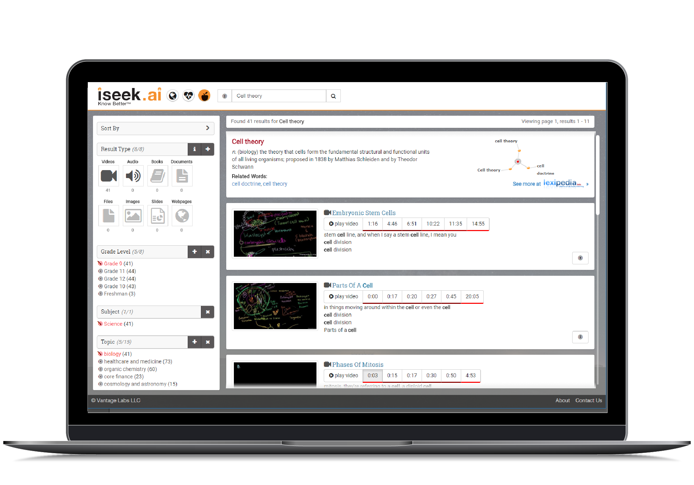
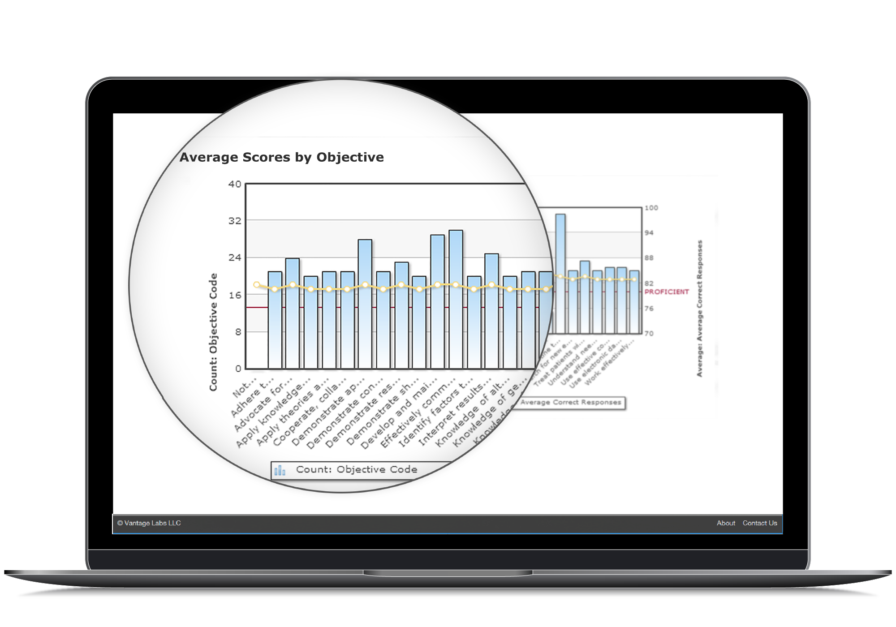

ISEEK®, a cognitive computing infrastructure that consumes and unifies data, content and information (of any media type) in order to develop knowledge for better decision-making. What makes ISEEK® so different from other analytics, CMS, or business intelligence solution alternatives is that it's cognitive. ISEEK® follows the human thought process, intelligently understanding and interpreting both structured and unstructured data. It continuously identifies and connects patterns in data and information in real-time in order to develop new knowledge with the most up-to-date information.
ISEEK and Canvas go hand-in-hand working together to by aggregating data from disparate sources, seamlessly, then linking with the Canvas LMS as well as proprietary and public databases. ISEEK and canvass work together to harness the data that normally causes chaos and helps you gain control and continuity with your curriculum. ISEEK® Education Curriculum and Canvas meet the highest Accreditation standards in Education for 20% of schools.
ISEEK® customizes solutions to meet your needs while leveraging industry leading technologies and expert services. Collaborating with ISEEK® will drive student achievement in your classrooms and will make your life easier.
ISEEK® automatically interprets your unstructured data and communicates it back in a structured format providing consistency and organization across your curriculum. You can search for the content of your entire body of curricular resources for a particular topic and even drill down to the slide level to find the piece of content you are looking for.
Prove efficacy for Best in Class Curriculum from teachers, publishers and OER and KNOW their content is aligned to your standards by proving their efficacy through student performance
Iseek helps faculty teach more effectively by dynamically revealing what topics are covered in slide decks, handouts and video lectures as well as providing references to authoritative resources to share with students. It will also help you understand your content so you can deliver personalized learning and pathways.
Prove teaching and content objectives to assist Instructors and Administration in daily performance and LCME accreditation requirements with the ability to prove where, when, how and by whom every subject was taught, and how students performed against that teaching.
ISEEK® will index daily and will automatically index new and expanded courses and provide “workflow” feedback notification: (does it match the standards/topics and address the skills taught in the course – opportunity to improve)
ISEEK® will unlock the value of the most important data in your school and greatly improve its ROI. We free up the previously unavailable data for new discoveries, new patterns, and picking up problems that would have been missed without integrated inclusion in Canvas. We can increase productivity for all users, eliminate labor, and hopefully increase revenue by helping you focus on what’s important for your school.
ISEEK® data and analytics provides for insight into your data which allows for increased data transparency to make instructional decisions, financial decisions and helps you focus on any aspect of your strategic goals
A dashboard provides visibility into all your data this data transparency tool allows for the district to provide accountability to its stakeholders. Users will also save time putting together reports and summaries that they normally would have put together manually.
ISEEK® assists in the development of a framework for your school, feed, object (student driven) and data informed objectives for your district. This is assurance that your content is aligned and vetted for alignment to content standards or objectives.
With ISEEK® the focus is on preparing students to be college and career ready. Students will save 90% of the time that students take to manually search for data and improve their accuracy by at least 80% and vastly improve their output.